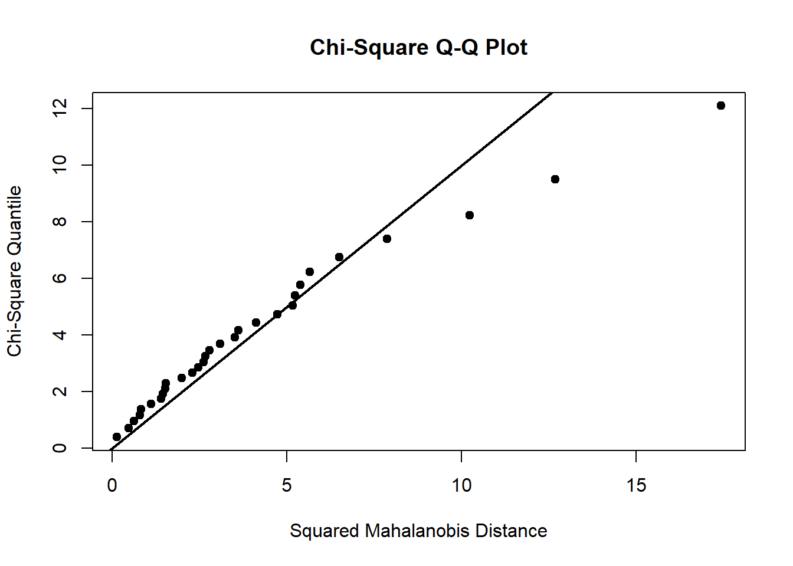

3.6 Evaluación del Supuesto de Normalidad Multivariada
Evaluar el supuesto de normalidad multivariada es importante para facilitar los procesos de inferencia estadística.
Existen varios métodos o alternativas para evaluar el supuesto de normalidad multivariada de un vector aleatorio.
Cuando \(n\)-es grande y los métodos de evaluación utilizados se basan en el vector de medias muestrales \(\overline{\underline{\mathbf{x}}}\) o en ciertas distancias que involucran dicho vector de medias muestrales, el supuesto de normalidad multivariada parece no ser tan crucial. En este caso la calidad de las inferencias realizadas, dependerá de qué tan parecida sea la distribución del vector de medias muestrales \(\overline{\underline{\mathbf{x}}}\) a una normal multivariada.
También es importante tener métodos para identificar cuando la distribución de un vector aleatorio se aleja de la normalidad multivariada, y así tener cuidado con los análisis posteriores.
Propiedad de la Normal-Multivariada
Recordar que bajo el supuesto de normalidad multivariada de un vector aleatorio \(\underline{\mathbf{x}}_{p\times 1}\), cualquier combinación lineal de las componentes de dicho vector tiene una distribución normal univariada.
Los gráficos de contorno de la normal tri-variada son elipsoides (o hiperelipsoides) y para el caso particular de \(p=2\) (normal bi-variada) son elipses.
Preguntas Adecuadas:
Algunos pasos previos antes de evaluar la normalidad multivariada, corresponden a responder las siguientes preguntas:
¿Son las distribuciones marginales del vector aleatorio, parecídas a normales univariadas?
¿Es la distribución de alguna combinación lineal de las componentes de \(\underline{\mathbf{x}}_{p\times 1}\), NO parecida a una normal univariada?
¿Al hacer gráficos de dispersión por pares de componentes de \(\underline{\mathbf{x}}_{p\times 1}\), presentan algunos de ellos comportamientos no elípticos?
¿Existen datos atípicos a nivel marginal o a nivel bivariado?
Métodos prácticos:
En la práctica para evaluar el supuesto de normalidad multivariado, generalmente se procede analizando la normalidad de las marginales del vector \(\underline{\mathbf{x}}_{p\times 1}\) y analizando la normalidad bivariada de pares de componentes de dicho vector.
No es frecuente, en la práctica, encontrar conjuntos de datos normales en bajas dimensiones (ie, \(p=1\) o \(p=2\)) y que no lo sean en altas dimensiones, pero hay que tener en cuenta que la normalidad univariada no implica la normalidad multivariada, ver un ejemplo en el EJERCICIO 4.8 de (Johnson and Wichern 2007), un caso de normalidad univariadas que no implica Normalidad-bi-variada.
3.6.1 Evaluación a nivel marginal (ie. Normalidad Univariada)
Existen varios enfoques para evaluar la normalidad Uni-variada, entre ellos están los siguientes.
Gráficos como los son los histogramas, cajas de bigote, etc.
Gráficos \(qq\)-plot y \(NPP\).
Prueba de Normalidad basada en el coeficiente de correlación de los puntos del \(qq\)-plot.
Análisis de las combinaciones lineales de las variables del vector.
Pruebas formales de Normalidad.
A continuación se explican de manera breve cada uno de estos procedimientos.
3.6.1.1 Gráficos: histogramas, cajas de bigote, diagrams de puntos, etc.
Generalmente se utilizan los histogramas o cajas de bigotes cuando la muestra es de tamaño moderado o grande y los diagramas de puntos en el caso de \(n\)-pequeño, para detectar alejamientos de la simetría de los datos, una cola parece ser mayor que otra.
3.6.1.2 Gráficos \(qq\)-plot.
Uso del gráficos cuantil-cuantil o \(qq\)-plot. Este gráfico puede ser usado para evaluar la normalidad de cada variable.
En él se grafican los cuantiles muestrales contra los cuantiles que se esperaría observar si las observaciones realmente provienen de una distribución normal.
Los pasos para construir un \(Q-Q\)-plot son:
a.) Ordene las observaciones originales de menor a mayor.
Sean \(X_{(1)}, X_{(2)}, \cdots, X_{(n)}\), las observaciones ordenadas.
Las probabilidades correspondientes a ellos son: \[ \frac{\left(1-\frac{1}{2} \right)}{n},\frac{\left(2-\frac{1}{2} \right)}{n}, \cdots , \frac{\left(n-\frac{1}{2} \right)}{n} \] Lo anterior quiere decir, que la proporción \(i/n\)-de la muestra que está a la izquierda del \(i\)-ésimo estadítico de orden, \(X_{(i)}\), se aproxima por: \[ \frac{i-\frac{1}{2}}{n} \]
b.) Se calculan los cuantiles de la normal estándar: \(q_{(1)}, q_{(2)}, \cdots , q_{(n)}\), correspondientes a las probabilidades anteriores.
c.) Se grafican los pares de observaciones: \[ \bigl[q_{(1)}\ ,\ X_{(1)}\bigr]\ ,\ \bigl[q_{(2)}\ ,\ X_{(2)}\bigr]\ ,\ \cdots \ ,\ \bigl[q_{(n)}\ ,\ X_{(n)}\bigr]. \]
Si los datos proceden de una distribución normal, se espera que el gráfico anterior sea aproximadamente una línea recta.
Lo anterior significa que los pares \([q_{(i)},X_{(i)}]\) estarán aproximadamente relacionados de forma lineal, ya que \(\sigma q_{(j)}+\mu\) estará muy cerca del cuantil muestral esperado.
3.6.1.3 Normal-Probability-Plot (NPP)
En Normal-Probability-Plot (\(NPP\)), se grafican las parejas, \(\bigl[m_{(i)}\ , \ x_{(i)}\bigr]\), donde \(m_{(i)}=E\bigl[Z_{(i)}\bigr]\)-es el valor esperado del \(i\)-ésimo estadístico de orden en una muestra de tamaño \(n\) de una normal estándar.
Este gráfico debe dar similar al \(qq\)-plot, ie. una línea recta.
Estos gráficos \(qq\)-plot y NPP no son muy claro, a menos que los tamaños de muestra sean moderadamente grandes, (ie. por ejemplo \(n\geq 20\)), ya que pueden mostrar observaciones muy alejadas de una tendencia lineal, aún cuando se sabe que los datos provienen de una distribución normal.
Ejemplo 3.11 (Gráfico QQ-Plot) Considere una muestra de tamaño \(n=10\) observaciones, las cuales fueron ordenadas de menor a mayor como se muestra en la siguiente tabla.
| Observaciones Ordenadas \(x_{(j)}\) | Probabilidades \(\left(j-\frac{1}{2} \right)/n\) | Quantiles de la \(N(0,1)\) \(q_{(j)}\) |
|---|---|---|
| -1.00 | 0.05 | -1.645 |
| -0.10 | 0.15 | -1.036 |
| 0.16 | 0.25 | -0.674 |
| 0.41 | 0.35 | -0.385 |
| 0.62 | 0.45 | -0.125 |
| 0.80 | 0.55 | 0.125 |
| 1.26 | 0.65 | 0.385 |
| 1.54 | 0.75 | 0.674 |
| 1.71 | 0.85 | 1.036 |
| 2.30 | 0.95 | 1.645 |
Por ejemplo, para el cálculo del cuantil de la \(N(0,1)\), para una probabilidad de \(0.65\) busca el cuantil que satisface: \(P[Z<q_{(7)}]=0.65\),
de donde se tiene que dicho cuantil es: \(q(7)=0.385\), puesto que: \[ P[Z<0.385]=\int_{-\infty}^{0.385} \frac{1}{\sqrt{2\pi}} e^{-z^2/2}dz=0.65. \] La construcción del \(qq\)-plot se basa en el diagrama de dispersión de los puntos \((q_{(j)}, x_{(j)}),\ \ j=1, 2, \cdots, 10\), el cual es:
Figura 3.5: Gráfica de un QQ-Plot
los cuales caen muy cerca de una línea recta, lo que conduce a no rechazar la hipótesis de que estos datos son de una distribución normal.
Ejemplo 3.12 (Gráfico QQ-Plot) El departamento de control de calidad de una empresa que produce hornos micro-ondas requiere monitorear la cantidad de radiación emitida por dichos micro-ondas cuando tienen la tapa cerrada. Aleatoriamente se eligieron \(n=42\) hornos y se observó dicha cantidad de radiación emitida por ellos con la tapa cerrada.
| Horno | Radiación | Horno | Radiación | Horno | Radiación | Horno | Radiación |
|---|---|---|---|---|---|---|---|
| 1 | 0.15 | 12 | 0.02 | 23 | 0.03 | 34 | 0.30 |
| 2 | 0.09 | 13 | 0.01 | 24 | 0.05 | 35 | 0.02 |
| 3 | 0.18 | 14 | 0.10 | 25 | 0.15 | 36 | 0.20 |
| 4 | 0.10 | 15 | 0.10 | 26 | 0.10 | 37 | 0.20 |
| 5 | 0.05 | 16 | 0.10 | 27 | 0.15 | 38 | 0.30 |
| 6 | 0.12 | 17 | 0.02 | 28 | 0.09 | 39 | 0.30 |
| 7 | 0.08 | 18 | 0.10 | 29 | 0.08 | 40 | 0.40 |
| 8 | 0.05 | 19 | 0.01 | 30 | 0.18 | 41 | 0.30 |
| 9 | 0.08 | 20 | 0.40 | 31 | 0.10 | 42 | 0.05 |
| 10 | 0.10 | 21 | 0.10 | 32 | 0.20 | ||
| 11 | 0.07 | 22 | 0.05 | 33 | 0.11 |
El \(qq\)-plot para estos datos es:
Figura 3.6: Gráfica de un QQ-Plot
La apariencia del gráfico indica que los datos no parecen provenir de una distribución normal. Los puntos señalados con un círculo son observaciones atípicas, pues están muy lejos del resto de los datos.
Observación:
Para esta muestra de datos de radiación, varias observaciones son iguales (observaciones empatadas). Cuando esto ocurre, a las observaciones con valores iguales se les asigna un mismo cuantil, el cual se obtiene usando el promedio de los cuantiles que ellas hubieran tenido si hubieran sido ligeramente distintas.
3.6.1.4 Prueba de Normalidad basada en el Coeficiente de Correlación de los puntos del \(qq\)-plot.
La linealidad de un gráfico \(qq\)-plot puede ser medida calculando el coeficiente de correlación para los puntos de dicho gráfico, el cual esta dado por: \[ r_Q=\frac{\sum_{j=1}^n (x_{(j)}-\overline{x})(q_{(j)}-\overline{q})} {\sqrt{\sum_{j=1}^n (x_{(j)}-\overline{x})^2}\sqrt{\sum_{j=1}^n (q_{(j)}-\overline{q})^2}} \] Basados en este coeficiente de correlación, se puede construir una prueba potente de normalidad, ver. (Filliben 1975; Looney and Gulledge Jr 1985) ( Shapiro y Wilk, 1965). Formalmente, se rechaza la hipótesis de normalidad a un nivel de significancia de \(\alpha\) si \(r_Q < r_Q(\alpha ,n)\) donde los valores críticos \(r_Q(\alpha ,n)\) se encuentran en la siguiente tabla:
| Tamaño de muestra \(n\) | Nivel de Significancia \(\alpha\) |
|---|
| 0.01 | 0.05 | 0.10 | |
|---|---|---|---|
| 5 | 0.8299 | 0.8788 | 0.9032 |
| 10 | 0.8801 | 0.9198 | 0.9351 |
| 15 | 0.9126 | 0.9389 | 0.9503 |
| 20 | 0.9269 | 0.9508 | 0.9604 |
| 25 | 0.9410 | 0.9591 | 0.9665 |
| 30 | 0.9479 | 0.9652 | 0.9715 |
| 35 | 0.9538 | 0.9682 | 0.9740 |
| 40 | 0.9599 | 0.9726 | 0.9771 |
| 45 | 0.9632 | 0.9749 | 0.9792 |
| 50 | 0.9671 | 0.9768 | 0.9809 |
| 55 | 0.9695 | 0.9787 | 0.9822 |
| 60 | 0.9720 | 0.9801 | 0.9836 |
| 75 | 0.9771 | 0.9838 | 0.9866 |
| 100 | 0.9822 | 0.9873 | 0.9895 |
| 150 | 0.9879 | 0.9913 | 0.9928 |
| 200 | 0.9905 | 0.9931 | 0.9942 |
| 300 | 0.9935 | 0.9953 | 0.9960 |
Ejemplo 3.13 (Prueba del Coeficiente de Correlación) Para el primer ejemplo donde \(n=10\), ver. ejemplo-3.11, el cálculo del coeficiente de correlación entre los puntos \((q_{(j)}, X_{(j)})\), \(j=1, 2, \cdots, 10\), del gráfico \(qq\)-plot es: \[ r_Q=\frac{\sum_{j=1}^{10} (x_{(j)}-\overline{x})(q_{(j)}-\overline{q})} {\sqrt{\sum_{j=1}^{10} (x_{(j)}-\overline{x})^2}\sqrt{\sum_{j=1}^{10} (q_{(j)}-\overline{q})^2}}=\frac{8.584}{\sqrt{8.472}\sqrt{8.795}}=0.994, \] de donde, para un nivel de significancia \(\alpha =0.10\), el valor crítico de la tabla es: \(r_Q(0.10, 10)= 0.9351\), luego como \(r_Q=0.994>0.9351=r_Q(0.10, 10)\), entonces no rechazamos la hipótesis de normalidad.
Ejemplo 3.14 (Prueba del Coeficiente de Correlación) Para el ejemplo de los datos de radiación emitida por micro-ondas cuando tienen la tapa cerrada, ver. ejemplo-3.12, se tienen los sigueintes resutados.
Probability Plot Correlation Coefficient Testdata: horno_cerrado ppcc = 0.93, n = 42, p-value = 4e-04 alternative hypothesis: horno_cerrado differs from a Normal distribution
de donde como el valor-p de la prueba dado por: 0.0004 es menor que \(\alpha=0.05\), luego se rechaza la hipótesis nula de normalidad de los datos.
Observación:
Para muestras grandes, las pruebas basadas en \(r_Q\) y la prueba de Shapiro Wilk (una prueba potente de normalidad) son aproximadamente las mismas.
La prueba de Shapiro-Wilk para este conjunto de datos da como resultados los siguientes:
Shapiro-Wilk normality testdata: horno_cerrado[, 1] W = 0.86, p-value = 1e-04
3.6.1.5 Análisis de las combinaciones lineales de las variables del vector.
Considere los valores propios de \(\mathbf{S}\), \(\hat{\lambda}_1,\hat{\lambda}_2,\ldots,\hat{\lambda}_p\) y sus correspondientes vectores propios \(\hat{\underline{\mathbf{e}}}_1,\hat{\underline{\mathbf{e}}}_2,\ldots,\hat{\underline{\mathbf{e}}}_p\). Se sugiere verificar normalidad para las combinaciones lineales dadas por: \[ \hat{\underline{\mathbf{e}}}_1^t \underline{\mathbf{x}}_j \ \ \ \text{y} \ \ \ \ \hat{\underline{\mathbf{e}}}_p^t \underline{\mathbf{x}}_j \] donde \(\hat{\underline{\mathbf{e}}}_1\) y \(\hat{\underline{\mathbf{e}}}_p\) son los vectores propios correspondientes al mayor y menor valor propio de \(\mathbf{S}\), respectivamente.
3.6.2 Evaluación de la Normalidad Bi-variada
Si las observaciones fueran generadas por un distribución normal multivariada (\(p>2\)), todas las distribuciones bivariadas (\(p=2\)) deberían ser normales y los contornos de densidad constante deberían ser elipses. Observe el siguiente diagrama de dispersión generado por una muestra simulada de una normal bivariada.
Figura 3.7: Datos Normales Bivariados
\[ \underline{\boldsymbol{\mu}}=\begin{bmatrix} 0 \\ 0 \end{bmatrix} \ \ \ , \ \ \ \mathbf{S}=\begin{bmatrix} 0.9 & 0.7 \\ 0.7 & 0.9 \end{bmatrix} \ \ , \ \mathbf{R}=\begin{bmatrix} 1 & 0.78 \\ 0.78 & 1 \end{bmatrix} \]
Además, por resultado mencionado anteriormente, ver. propiedades de la NM 3.5.8, el conjunto de puntos bivariados \(\underline{\mathbf{x}}\) tales que: \[ (\underline{\mathbf{x}} -\underline{\boldsymbol{\mu}})^t\mathbf{\Sigma}^{-1}(\underline{\mathbf{x}} -\underline{\boldsymbol{\mu}})\leq \chi_{\alpha}^2(2) \] tiene una probabilidad \(1-\alpha\), ie. \[ P[(\underline{\mathbf{x}} -\underline{\boldsymbol{\mu}})^t\mathbf{\Sigma}^{-1}(\underline{\mathbf{x}} -\underline{\boldsymbol{\mu}})\leq \chi_{\alpha}^2(2)]=1-\alpha. \] Por ejemplo, si \(\alpha =0.5\), para muestras grandes se esperaría que alrededor del \(50\%\) de las observaciones caigan dentro de la elipse dada por: \[ (\underline{\mathbf{x}} -\underline{\overline{\mathbf{x}}})^tS^{-1}(\underline{\mathbf{x}} -\underline{\overline{\mathbf{x}}})\leq \chi_{0.5}^2(2)=1.39 \] Si no se cumple esto, entonces la normalidad bi-variada es sospechosa.
Ejemplo 3.15 (Normalidad Bivariada) Considere los pares de datos para las variables \(X_1=\)ventas y \(X_2=\)ganancias para las \(10\) mayores corporaciones industriales de E.U. Observe que este conjunto de datos no forman una muestra aleatoria.
| Compañía | \(X_1\)-Ventas (Billones) | \(X_2\)-Ganancias (Billones) | \(X_3\)-Activo (Billones) |
|---|---|---|---|
| Citigroup | 108.28 | 17.05 | 1484.10 |
| General Electric | 152.36 | 16.59 | 750.33 |
| American Intl Group | 95.04 | 10.91 | 766.42 |
| Bank of America | 65.45 | 14.14 | 1110.46 |
| HSBC Group | 62.97 | 9.52 | 1031.29 |
| ExxonMobil | 263.99 | 25.33 | 195.26 |
| Royal Dutch/Shell | 265.19 | 18.54 | 193.83 |
| BP | 285.06 | 15.73 | 191.11 |
| ING Group | 92.01 | 8.10 | 1175.16 |
| Toyota Motor | 165.68 | 11.13 | 211.15 |
Para estos datos se tiene que:
\[ \underline{\overline{\mathbf{x}}}=\begin{bmatrix} 155.60 \\ 14.70 \end{bmatrix} \ , \ \ \ \ \ S=\begin{bmatrix} 7476.45 & 303.62 \\ 303.62 & 26.19 \end{bmatrix} \]
\[ S^{-1}=\frac{1}{103623.12}\begin{bmatrix} 26.19 & -303.62 \\ -303.62 & 7476.45 \end{bmatrix} \] Para \(\alpha =0.5\), a partir de la distribución chi-cuadrado con \(p=2\)-grados de libertad, se obtiene que: \(\chi_{0.5}^2(2)=1.39\), de donde, cualquier observación \(\underline{\mathbf{x}}=(x1, x2)\) que cumpla la siguiente desigualdad: \[ \begin{bmatrix} x_1-155.60 & x_2-14.70 \end{bmatrix}\left(\begin{bmatrix} 0.000253 & -0.002930 \\ -0.002930 & 0.072148 \end{bmatrix}\times 10^{-5}\right)\begin{bmatrix} x_1-155.60 \\ x_2-14.70 \end{bmatrix} \leq 1.39, \]
debe estar sobre o dentro del contorno estimado del \(50\%\) de probabilidad. De lo contrario la observación estaría por fuera.
Para las 10 observaciones observadas se tiene que sus distancias generalizadas son:
161, 0.30, 0.62, 1.79, 1.30, 4.38, 1.64, 3.53, 1.71 1.16.
Si los datos proceden de una distribución normal, se esperaría que aproximadamente el \(50\%\) de las observaciones caiga dentro o sobre el contorno estimado anterior, o dicho de otro modo, el \(50 \%\) de las distancias calculadas deberían ser menores o iguales que 1.39.
Se observa que en total 4 de estas 10 distancias son menores que 1.39, lo que implica que la proporción estimada de observaciones que cumplen la desigualdad es del \(40 \%\).
La diferencia entre de esta proporción con el \(50 \%\) (ie. un \(10 \%\) de diferencia) proporciona una evidencia para rechazar la normalidad bivariada en estos datos. Sin embargo, la muestra es muy pequeña para permitir obtener esta conclusión.
3.6.2.1 Otro Método (Gráfico Chi-Cuadrado)
El procedimiento anterior es útil, pero bastante burdo. Un método más formal para evaluar la normalidad conjunta está basado en las distancias cuadráticas generalizadas, dadas por: \[ d_i^2=(\underline{\mathbf{x}}_i -\underline{\overline{\mathbf{x}}})^tS^{-1}(\underline{\mathbf{x}}_i -\underline{\overline{\mathbf{x}}})\ ,\ \text{para} \ \ i=1,2,\ldots, n, \] donde, \(\underline{\mathbf{x}}_i\)-son las observaciones muestrales.
El siguiente procedimiento, no está limitado al caso bi-variado, por lo que puede ser usado par \(p\geq 2\).
Cuando la población es normal multivariada y cuando tanto \(n\) como \(n-p\) son grandes, por ejemplo, (\(\geq 25\ o \ 30\)), cada una de las distancias al cuadrado \(d_j^2\)-anterior, deberían comportarse como una variable aleatoria con distribución \(\chi^2\).
Aunque, estas distancias no son independientes o distribuidas chi-cuadrados exactamente, es útil graficarlas como si lo fueran.
El gráfico resultante es llamado Gráfico Chi-Cuadrado, y se construye de la siguiente manera:
1.) Se Ordenan las distancias de menor a mayor: \[ d_{(1)}^2 \leq d_{(2)}^2 \leq \ldots d_{(n)}^2 \] 2. Se grafican los pares: \[ \left( q_{c,p} \left( \frac{i - \frac{1}{2}}{n} \right) \ , \ d_i^2 \right)\ , \ i=1,2,\ldots,n \] donde, \(q_{c,p} \left( \frac{ i - \frac{1}{2}}{n} \right)\)-es el cuantil \(100\left(i-\frac{1}{2} \right)/n\) de la distribución chi-cuadrado con \(p\)-grados de libertad, ie. se cumple que: \[ P\left[\chi^2_{(p)} \leq q_{c,p} \left( \frac{ i - \frac{1}{2}}{n} \right) \right]=\frac{ i - \frac{1}{2}}{n} \]
Bajo normalidad, el gráfico debería mostrar un patrón lineal a través del origen y con pendiente 1. Un patrón sistemáticamente curvo sugiere falta de normalidad multivariada.
Ejemplo 3.16 (Normalidad Bivariada) Gráfico chi-cuadrado para los datos del ejemplo anterior. Las distancias ordenadas y los correspondientes percentiles chi-cuadrado se muestran en la siguiente tabla:
| Observaciones \(i\) | Distancias Ordenadas \(d_{(i)}^2\) | Quantiles \(q_{c,2}\left(\frac{i-\frac{1}{2}}{10} \right)\) \(\chi_2^2\) de |
|---|---|---|
| 1 | 0.30 | 0.10 |
| 2 | 0.62 | 0.33 |
| 3 | 1.16 | 0.58 |
| 4 | 1.30 | 0.86 |
| 5 | 1.61 | 1.20 |
| 6 | 1.64 | 1.60 |
| 7 | 1.71 | 2.10 |
| 8 | 1.79 | 2.77 |
| 9 | 3.53 | 3.79 |
| 10 | 4.38 | 5.99 |
y el gráfico chi-cuadrado para estos datos es:
Figura 3.8: Gráfico Chi-Cuadrado
Se observa que los puntos no caen en una línea recta de pendiente 1.Por lo que no se apoya la normalidad bi-variada en estos datos. Aunque hay que tener en cuenta que \(n\) es pequeño en este ejemplo.
NOTA: CONSULTAR PRUEBAS MULTIVARIADAS DE ASIMETRÍA Y KURSTOSIS.
Ejemplo 3.17 (Normalidad 4-Variada) La siguiente tabla tiene las distancias ordenadas y los percentiles chi-cuadrado al igual que el gráfico chi- cuadrado, para una muestra 4-variada.
| \(x_1\) | \(x_2\) | \(x_3\) | \(x_4\) | \(d_2\) | \(q(c,4)\) | |
|---|---|---|---|---|---|---|
| 1 | 1889 | 1651 | 1561 | 1778 | 0.60 | 0.39 |
| 2 | 2403 | 2048 | 2087 | 2197 | 5.48 | 0.71 |
| 3 | 2119 | 1700 | 1815 | 2222 | 7.62 | 0.95 |
| 4 | 1645 | 1627 | 1110 | 1533 | 5.21 | 1.17 |
| 5 | 1976 | 1916 | 1614 | 1883 | 1.40 | 1.37 |
| 6 | 1712 | 1712 | 1439 | 1546 | 2.22 | 1.56 |
| 7 | 1943 | 1685 | 1271 | 1671 | 4.99 | 1.74 |
| 8 | 2104 | 1820 | 1717 | 1874 | 1.49 | 1.92 |
| 9 | 2983 | 2794 | 2412 | 2581 | 12.26 | 2.10 |
| 10 | 1745 | 1600 | 1384 | 1508 | 0.77 | 2.29 |
| 11 | 1710 | 1591 | 1518 | 1667 | 1.93 | 2.47 |
| 12 | 2046 | 1907 | 1627 | 1898 | 0.46 | 2.66 |
| 13 | 1840 | 1841 | 1595 | 1741 | 2.70 | 2.85 |
| 14 | 1867 | 1685 | 1493 | 1678 | 0.13 | 3.05 |
| 15 | 1859 | 1649 | 1389 | 1714 | 1.08 | 3.25 |
| 16 | 1954 | 2149 | 1180 | 1281 | 16.85 | 3.46 |
| 17 | 1325 | 1170 | 1002 | 1176 | 3.50 | 3.69 |
| 18 | 1419 | 1371 | 1252 | 1308 | 3.99 | 3.92 |
| 19 | 1828 | 1634 | 1602 | 1755 | 1.36 | 4.17 |
| 20 | 1725 | 1594 | 1313 | 1646 | 1.46 | 4.44 |
| 21 | 2276 | 2189 | 1547 | 2111 | 9.90 | 4.73 |
| 22 | 1899 | 1614 | 1422 | 1477 | 5.06 | 5.04 |
| 23 | 1633 | 1513 | 1290 | 1516 | 0.80 | 5.39 |
| 24 | 2061 | 1867 | 1646 | 2037 | 2.54 | 5.77 |
| 25 | 1856 | 1493 | 1356 | 1533 | 4.58 | 6.22 |
| 26 | 1727 | 1412 | 1238 | 1469 | 3.40 | 6.74 |
| 27 | 2168 | 1896 | 1701 | 1834 | 2.38 | 7.39 |
| 28 | 1655 | 1675 | 1414 | 1597 | 3.00 | 8.24 |
| 29 | 2326 | 2301 | 2065 | 2234 | 6.28 | 9.49 |
| 30 | 1490 | 1382 | 1214 | 1284 | 2.58 | 12.09 |

Figura 3.9: Gráfico Chi-Cuadrado
Se observa que los puntos no caen en una línea recta de pendiente 1. Por lo que se rechaza la hipótesis de normalidad 4-variada para estos datos, aunque \(n\)-es pequeño.
| Test | Statistic | p value | Result |
|---|---|---|---|
| Mardia Skewness | 37.68401850797 | 0.00967629675522968 | NO |
| Mardia Kurtosis | 2.53811341655709 | 0.0111451859079119 | NO |
| MVN | NA | NA | NO |
| Test | HZ | p value | MVN |
|---|---|---|---|
| Henze-Zirkler | 1.038 | 0.006 | NO |
| Test | Variable | Statistic | p value | Normality |
|---|---|---|---|---|
| Shapiro-Wilk | x | 0.9307 | 0.0512 | YES |
| Shapiro-Wilk | y | 0.9127 | 0.0175 | NO |
| Shapiro-Wilk | z | 0.9326 | 0.0575 | YES |
| Shapiro-Wilk | w | 0.9613 | 0.3337 | YES |
NULL